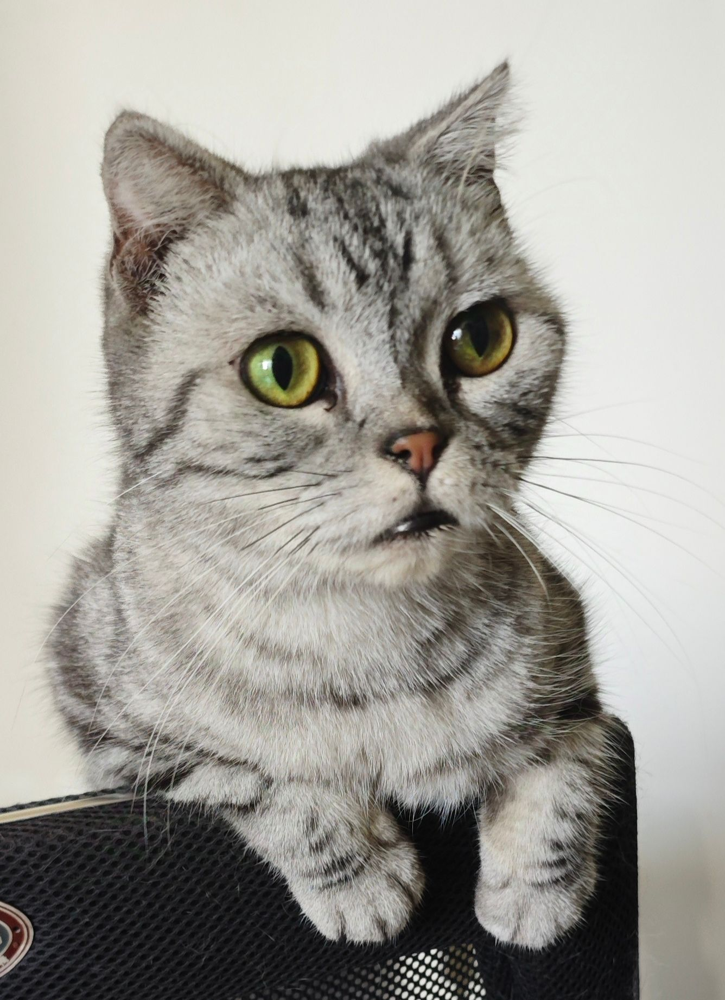
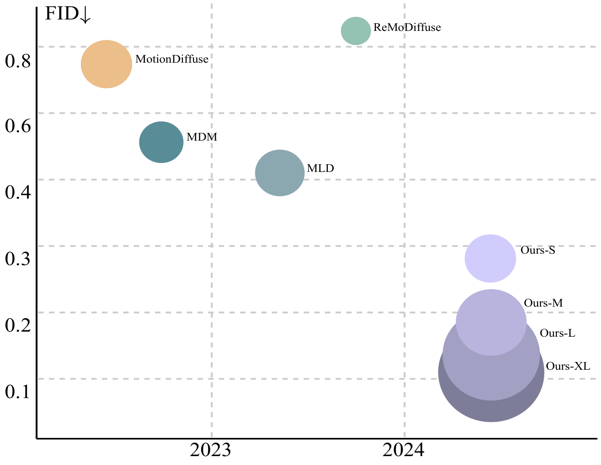
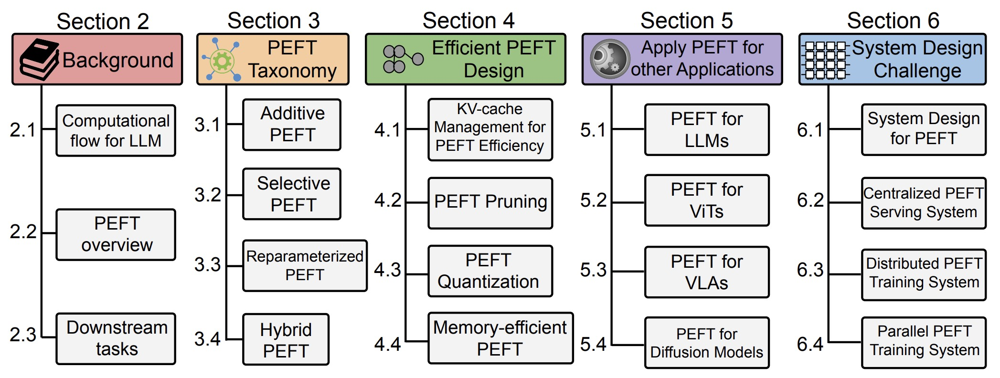
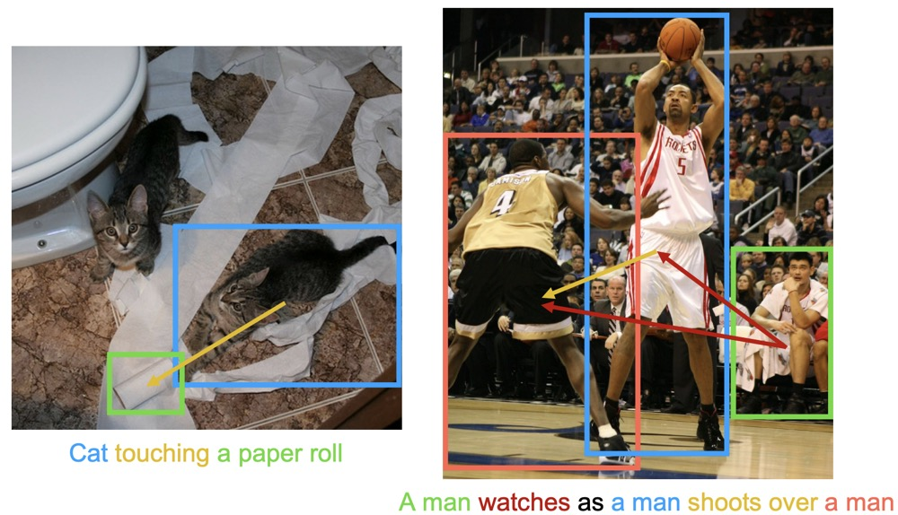
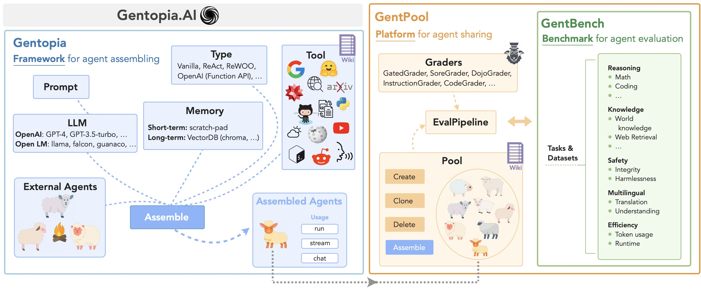
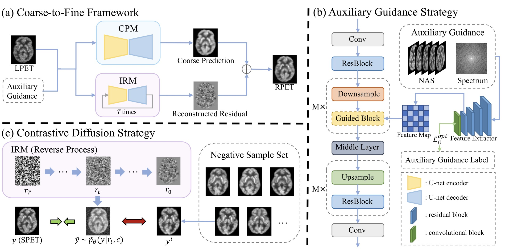

|
I am first-year PhD student at the Khoury College of Computer Sciences, Northeastern University, supervised by Huaizu Jiang. I have a broad interest in Computer Vision, with a recent focus on 4D generation (e.g., human motion generation), and exploring applications involving MLLMs. |
 |
 Zeyu Han 韩泽宇
Zeyu Han 韩泽宇 
{kind=link}
| News |
|
[2024.03] 🎉 Our survey on PEFT methods has been posted! 🎉. [2024.02] 🎉 One work is accepted to CVPR 2024! 🎉. |
| Research Interests |
|
I am interested in Computer Vision, especially 3D Vision and Multimodal Reasoning. |
| Selected Publications |
|  |
Zichong Meng, Yiming Xie, Xiaogang Peng, Zeyu Han, Huaizu Jiang arXiv, 2024 website / arXiv |
|  |
Zeyu Han, Chao Gao, Jinyang Liu, Jeff (Jun) Zhang, Sai Qian Zhang TMLR, 2024 arXiv |
|  |
Zeyu Han, Fangrui Zhu, Qianru Lao, Huaizu Jiang CVPR, 2024 code / Poster |
|  |
Binfeng Xu, Xukun Liu, Hua Shen, Zeyu Han, Yuhan Li, Murong Yue, Zhiyuan Peng, Yuchen Liu, Ziyu Yao, Dongkuan Xu EMNLP System Demo, 2023 code & project page / Poster |
|  |
Zeyu Han*, Yuhan Wang*, Luping Zhou, Peng Wang, Binyu Yan, Jiliu Zhou, Yan Wang†, Dinggang Shen† MICCAI, 2023 code / Poster |
| Service |
|
|
|
|